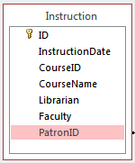

Library Instruction Use Case
Some activities that take place in the library aren't recorded digitally, but may reveal important information about how the library is used. Are students who consult a reference librarian more likely to check out a book? Does instruction in library use increase average circulation? Are the students who use the computer lab in the library using the library for other things? None of the facts that would let us answer these questions are available in a database, but we can certainly design tables to help us answer them.
We'll look at library instruction as an example, but any activity that can be associated with a patron ID can be analyzed using the same methods.
Designing the table
The first step in any new database design is identifying the information that we're interested in tracking. In the case of library instruction, we need at least the date that the instruction occurred, and the IDs of the patrons who attended. We may also be interested in the librarian who conducted the instructional activity, the faculty member responsible for scheduling it, and information about any course associated with the activity.
Once we've identified the information we want to store, we need to translate that into a table design. We can include all of the information described above, and just fill in the information we have for a given instructional activity. A sample table design is shown here:

Notice that we have a separate ID field in these records. There is no easily-identified primary key (see Appendix D for more information if you're not clear on primary and foreign keys.), because a single patron may have multiple library instruction activities on a single day, or with a single librarian, or for a single course. We're mostly concerned with whether or not a patron has had any instruction, so the presence or absence of a record in the Instruction table is sufficient. As additional requirements become clear, we can modify the design to better match our needs.
One other interesting point is that we haven't used a dimension table and a fact table as we did in the Patron Snapshots use case. In this design, if several patrons attend the same instructional activity, we will duplicate the date, instructor, course information, and any other data we need to store. Each patron will have a single record added to the table to indicate their attendance. We don't really expect to have large numbers of patrons in a single instructional activity, so the space savings from recording each instructional activity in an Instruction table and storing patron relationships in a PatronInstruction table is minimal. We need to weigh it against the cost of performing a second JOIN operation when we want to run queries using the instruction data.
Collecting the data
The most important part of the process is collecting the data to put into our database. Since the amount of data associated with a given instructional activity is fairly small, we can simply have a staff member record it in an Excel spreadsheed, and import it using the software described in the Data in existing databases section. By making the process as painless as possible for the staff and faculty involved, you have a better chance of collecting good data. Use whatever process works best for your library, but make sure people know what they need to do to collect the information.